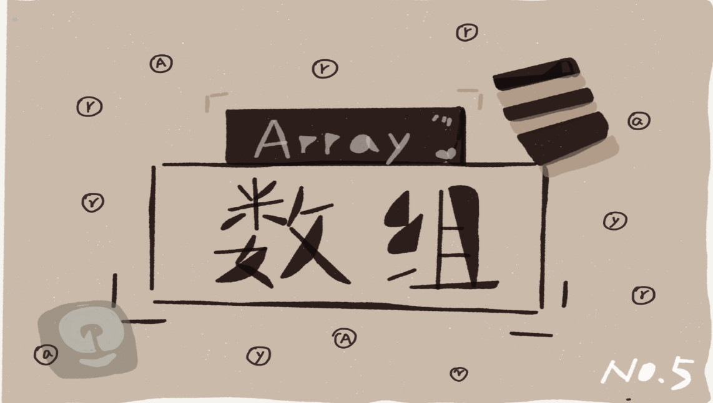

数组

提到数组，我想你肯定不陌生，甚至还会自信地说，它很简单啊。
是的，在每一种编程语言中，基本都会有数组这种数据类型。不过，它不仅仅是一种编程语言中的数据类型，还是
一种最基础的数据结构。尽管数组看起来非常基础、简单，但是我估计很多人都并没有理解这个基础数据结构的精
髓。
在大部分编程语言中，数组都是从 0 开始编号的，但你是否下意识地想过，为什么数组要从 0 开始编号，而不是
从 1 开始呢？ 从 1 开始不是更符合人类的思维习惯吗？
你可以带着这个问题来学习接下来的内容。
如何实现随机访问？
什么是数组？我估计你心中已经有了答案。不过，我还是想用专业的话来给你做下解释。数组（Array）是一种
线性表数据结构。它用一组连续的内存空间，来存储一组具有相同类型的数据。
这个定义里有几个关键词，理解了这几个关键词，我想你就能彻底掌握数组的概念了。下面就从我的角度分别给
你“点拨”一下。
第一是线性表（Linear List）。顾名思义，线性表就是数据排成像一条线一样的结构。每个线性表上的数据最多只
有前和后两个方向。其实除了数组，链表、队列、栈等也是线性表结构。

而与它相对立的概念是非线性表，比如二叉树、堆、图等。之所以叫非线性，是因为，在非线性表中，数据
之间并不是简单的前后关系。

第二个是连续的内存空间和相同类型的数据。正是因为这两个限制，它才有了一个堪称“杀手锏”的特性：“随机访
问”。但有利就有弊，这两个限制也让数组的很多操作变得非常低效，比如要想在数组中删除、插入一个数据，为
了保证连续性，就需要做大量的数据搬移工作。
说到数据的访问，那你知道数组是如何实现根据下标随机访问数组元素的吗？
我们拿一个长度为 10 的 int 类型的数组 int[] a = new int[10] 来举例。在我画的这个图中，计算机给数组 a[10]，
分配了一块连续内存空间 1000～1039，其中，内存块的首地址为 base_address = 1000。

我们知道，计算机会给每个内存单元分配一个地址，计算机通过地址来访问内存中的数据。当计算机需要随机访问
数组中的某个元素时，它会首先通过下面的寻址公式，计算出该元素存储的内存地址：
a[i]_address = base_address + i * data_type_size
其中 data_type_size 表示数组中每个元素的大小。我们举的这个例子里，数组中存储的是 int 类型数据，所以
data_type_size 就为 4 个字节。这个公式非常简单，我就不多做解释了。
这里我要特别纠正一个“错误”。我在面试的时候，常常会问数组和链表的区别，很多人都回答说，“链表适合插
入、删除，时间复杂度 O(1)；数组适合查找，查找时间复杂度为 O(1)”。
实际上，这种表述是不准确的。数组是适合查找操作，但是查找的时间复杂度并不为 O(1)。即便是排好序的数
组，你用二分查找，时间复杂度也是 O(logn)。所以，正确的表述应该是，数组支持随机访问，根据下标随机访问
的时间复杂度为 O(1)。
低效的“插入”和“删除”
前面概念部分我们提到，数组为了保持内存数据的连续性，会导致插入、删除这两个操作比较低效。现在我们就来
详细说一下，究竟为什么会导致低效？又有哪些改进方法呢？
插入操作
我们先来看插入操作。
假设数组的长度为 n，现在，如果我们需要将一个数据插入到数组中的第 k 个位置。为了把第 k 个位置腾出来，给
新来的数据，我们需要将第 k～n 这部分的元素都顺序地往后挪一位。那插入操作的时间复杂度是多少呢？你可以
自己先试着分析一下。
如果在数组的末尾插入元素，那就不需要移动数据了，这时的时间复杂度为 O(1)。但如果在数组的开头插入元
素，那所有的数据都需要依次往后移动一位，所以最坏时间复杂度是 O(n)。 因为我们在每个位置插入元素的概率
是一样的，所以平均情况时间复杂度为 (1+2+…n)/n=O(n)。
如果数组中的数据是有序的，我们在某个位置插入一个新的元素时，就必须按照刚才的方法搬移 k 之后的数据。
但是，如果数组中存储的数据并没有任何规律，数组只是被当作一个存储数据的集合。在这种情况下，如果要将某
个数组插入到第 k 个位置，为了避免大规模的数据搬移，我们还有一个简单的办法就是，直接将第 k 位的数据搬
移到数组元素的最后，把新的元素直接放入第 k 个位置。
为了更好地理解，我们举一个例子。假设数组 a[10] 中存储了如下 5 个元素：a，b，c，d，e。
我们现在需要将元素 x 插入到第 3 个位置。我们只需要将 c 放入到 a[5]，将 a[2] 赋值为 x 即可。最后，数组中的
元素如下： a，b，x，d，e，c。

利用这种处理技巧，在特定场景下，在第 k 个位置插入一个元素的时间复杂度就会降为 O(1)。这个处理思想在快
排中也会用到，我会在排序那一节具体来讲，这里就说到这儿。
删除操作
我们再来看删除操作。
跟插入数据类似，如果我们要删除第 k 个位置的数据，为了内存的连续性，也需要搬移数据，不然中间就会出现
空洞，内存就不连续了。
和插入类似，如果删除数组末尾的数据，则最好情况时间复杂度为 O(1)；如果删除开头的数据，则最坏情况时间
复杂度为 O(n)；平均情况时间复杂度也为 O(n)。
实际上，在某些特殊场景下，我们并不一定非得追求数组中数据的连续性。如果我们将多次删除操作集中在一起执
行，删除的效率是不是会提高很多呢？
我们继续来看例子。数组 a[10] 中存储了 8 个元素：a，b，c，d，e，f，g，h。现在，我们要依次删除 a，b，c
三个元素。

为了避免 d，e，f，g，h 这几个数据会被搬移三次，我们可以先记录下已经删除的数据。每次的删除操作并不是
真正地搬移数据，只是记录数据已经被删除。当数组没有更多空间存储数据时，我们再触发执行一次真正的删除操
作，这样就大大减少了删除操作导致的数据搬移。
如果你了解 JVM，你会发现，这不就是 JVM 标记清除垃圾回收算法的核心思想吗？没错，数据结构和算法的魅力
就在于此，很多时候我们并不是要去死记硬背某个数据结构或者算法，而是要学习它背后的思想和处理技巧，这些
东西才是最有价值的。如果你细心留意，不管是在软件开发还是架构设计中，总能找到某些算法和数据结构的影
子。
警惕数组的访问越界问题
了解了数组的几个基本操作后，我们来聊聊数组访问越界的问题。
首先，我请你来分析一下这段 C 语言代码的运行结果：
int main(int argc, char* argv[]){
int i = 0;
int arr[3] = {0};
for(; i<=3; i++){
arr[i] = 0;
printf("hello world\n");
}
return 0;
}
你发现问题了吗？这段代码的运行结果并非是打印三行“hello word”，而是会无限打印“hello world”，这是为什么
呢？
因为，数组大小为 3，a[0]，a[1]，a[2]，而我们的代码因为书写错误，导致 for 循环的结束条件错写为了 i<=3 而
非 i<3，所以当 i=3 时，数组 a[3] 访问越界。
我们知道，在 C 语言中，只要不是访问受限的内存，所有的内存空间都是可以自由访问的。根据我们前面讲的数
组寻址公式，a[3] 也会被定位到某块不属于数组的内存地址上，而这个地址正好是存储变量 i 的内存地址，那么
a[3]=0 就相当于 i=0，所以就会导致代码无限循环。
数组越界在 C 语言中是一种未决行为，并没有规定数组访问越界时编译器应该如何处理。因为，访问数组的本质
就是访问一段连续内存，只要数组通过偏移计算得到的内存地址是可用的，那么程序就可能不会报任何错误。
这种情况下，一般都会出现莫名其妙的逻辑错误，就像我们刚刚举的那个例子，debug 的难度非常的大。而且，
很多计算机病毒也正是利用到了代码中的数组越界可以访问非法地址的漏洞，来攻击系统，所以写代码的时候一定
要警惕数组越界。
但并非所有的语言都像 C 一样，把数组越界检查的工作丢给程序员来做，像 Java 本身就会做越界检查，比如下面
这几行 Java 代码，就会抛出 java.lang.ArrayIndexOutOfBoundsException。
int[] a = new int[3];
a[3] = 10;
容器能否完全替代数组？
针对数组类型，很多语言都提供了容器类，比如 Java 中的 ArrayList、C++ STL 中的 vector。在项目开发中，什么
时候适合用数组，什么时候适合用容器呢？
这里我拿 Java 语言来举例。如果你是 Java 工程师，几乎天天都在用 ArrayList，对它应该非常熟悉。那它与数组
相比，到底有哪些优势呢？
我个人觉得，ArrayList 最大的优势就是可以将很多数组操作的细节封装起来。比如前面提到的数组插入、删除数
据时需要搬移其他数据等。另外，它还有一个优势，就是支持动态扩容。
数组本身在定义的时候需要预先指定大小，因为需要分配连续的内存空间。如果我们申请了大小为 10 的数组，当
第 11 个数据需要存储到数组中时，我们就需要重新分配一块更大的空间，将原来的数据复制过去，然后再将新的
数据插入。
如果使用 ArrayList，我们就完全不需要关心底层的扩容逻辑，ArrayList 已经帮我们实现好了。每次存储空间不够
的时候，它都会将空间自动扩容为 1.5 倍大小。
不过，这里需要注意一点，因为扩容操作涉及内存申请和数据搬移，是比较耗时的。所以，如果事先能确定需要存
储的数据大小，最好在创建 ArrayList 的时候事先指定数据大小。
比如我们要从数据库中取出 10000 条数据放入 ArrayList。我们看下面这几行代码，你会发现，相比之下，事先指
定数据大小可以省掉很多次内存申请和数据搬移操作。
ArrayList<User> users = new ArrayList(10000);
for (int i = 0; i < 10000; ++i) {
users.add(xxx);
}
作为高级语言编程者，是不是数组就无用武之地了呢？当然不是，有些时候，用数组会更合适些，我总结了几点自
己的经验。
- Java ArrayList 无法存储基本类型，比如 int、long，需要封装为 Integer、Long 类，而 Autoboxing、Unboxing 则有一定的性能消耗，所以如果特别关注性能，或者希望使用基本类型，就可以选用数组。
- 如果数据大小事先已知，并且对数据的操作非常简单，用不到 ArrayList 提供的大部分方法，也可以直接使用数组。
- 还有一个是我个人的喜好，当要表示多维数组时，用数组往往会更加直观。比如 Object[][] array；而用容器的话则需要这样定义：ArrayList > array。
我总结一下，对于业务开发，直接使用容器就足够了，省时省力。毕竟损耗一丢丢性能，完全不会影响到系统整体
的性能。但如果你是做一些非常底层的开发，比如开发网络框架，性能的优化需要做到极致，这个时候数组就会优
于容器，成为首选。
为什么很多编程语言中数组都从0开始编号？
现在我们来思考开篇的问题：为什么大多数编程语言中，数组要从 0 开始编号，而不是从 1 开始呢？
从数组存储的内存模型上来看，“下标”最确切的定义应该是“偏移（offset）”。前面也讲到，如果用 a 来表示数组
的首地址，a[0] 就是偏移为 0 的位置，也就是首地址，a[k] 就表示偏移 k 个 type_size 的位置，所以计算 a[k] 的
内存地址只需要用这个公式：
a[k]_address = base_address + k * type_size
但是，如果数组从 1 开始计数，那我们计算数组元素 a[k] 的内存地址就会变为：
a[k]_address = base_address + (k-1)*type_size
对比两个公式，我们不难发现，从 1 开始编号，每次随机访问数组元素都多了一次减法运算，对于 CPU 来说，就
是多了一次减法指令。
数组作为非常基础的数据结构，通过下标随机访问数组元素又是其非常基础的编程操作，效率的优化就要尽可能做
到极致。所以为了减少一次减法操作，数组选择了从 0 开始编号，而不是从 1 开始。
不过我认为，上面解释得再多其实都算不上压倒性的证明，说数组起始编号非 0 开始不可。所以我觉得最主要的
原因可能是历史原因。
C 语言设计者用 0 开始计数数组下标，之后的 Java、JavaScript 等高级语言都效仿了 C 语言，或者说，为了在一
定程度上减少 C 语言程序员学习 Java 的学习成本，因此继续沿用了从 0 开始计数的习惯。实际上，很多语言中数
组也并不是从 0 开始计数的，比如 Matlab。甚至还有一些语言支持负数下标，比如 Python。
内容小结
我们今天学习了数组。它可以说是最基础、最简单的数据结构了。数组用一块连续的内存空间，来存储相同类型的
一组数据，最大的特点就是支持随机访问，但插入、删除操作也因此变得比较低效，平均情况时间复杂度为
O(n)。在平时的业务开发中，我们可以直接使用编程语言提供的容器类，但是，如果是特别底层的开发，直接使用
数组可能会更合适。